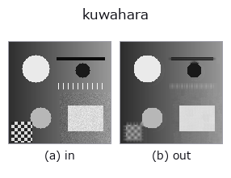

smoothing op• 資料種類:image → image
• 呼叫:fullseye.apply(img, "kuwahara", a=0.5, b=0.5)(2-D 的模型是一張圖 + 兩個純量旋鈕 a,b∈[0,1])

*圖為在 128×128 合成輸入上實際執行的輸出。左為輸入，右為輸出。點雲以俯視散點顯示(亮度 = z)，一維序列為折線，體資料為沿 z 的最大值投影，影片為中間影格，複數影像為振幅；無法成像的回傳值直接顯示數值。*
掃描旋鈕 a(0.1 / 0.5 / 0.9，另一旋鈕取預設):
▸ kuwahara: 旋鈕 a 掃描 (文件網站)
*旋鈕 b 不改變輸出(實測: 0.1 / 0.5 / 0.9 相同)。*
換別的影像(合成場景 / 照片 / 硬幣。上排為輸入，下排為對應輸出。旋鈕取預設):
▸ kuwahara: 其他輸入影像 (文件網站)
*第 4 欄是彩色 (H,W,3) 輸入。此運算子能正確處理顏色而不跨通道(不把顏色通道當作第三個空間軸摺積)。*
Kuwahara 濾波（1976）。保邊平滑：取四個相互重疊的視窗中變異數最小者的平均值作為輸出。
> 以下的詳細說明為原文 —— 摘要與標題已翻譯。
油絵調の見た目にも使われる。
各画素について、その画素を角に含む (r+1) x (r+1) の窓を 4 つ(左上・右上・左下・右下。隣り合う窓は中心の行と列を共有して重なる)とり、分散がいちばん小さい窓の平均を出力する。縁をまたぐ窓は分散が大きいので選ばれず、画素は縁の「自分と同じ側」の窓の平均になる。だから平坦部は均され、段差は鈍らない(gaussian は段差をなだらかにしてしまう)。
a が窓の半径 r = 1 + floor(9a + 0.5)(1〜10、窓の一辺は r+1)を振る。大きいほど均す範囲が広がり、細い構造は消える。b は未使用。
計算量は O(N): 窓の和と二乗和を軸ごとの累積和で求めるので、半径に依存しない(分散は E[x^2] - E[x]^2、全体の平均を引いてから計算して桁落ちを抑える)。分散の同点は、小数 10 桁に丸めた値で比べ、宣言順(左上・右上・左下・右下)で決める。
端の扱い: 端の画素を複製する(最近傍)。端の画素の窓は、画像の外を端の値で埋めて作る。
適用条件: (1) 4 象限の方向は軸に揃っているので、斜めの縁では選ばれた窓が縁に沿わず、角の丸まりや「ブロック状」の模様が出る(一般化 Kuwahara はこれを直す)。
(2) 半径が大きいと細い線は消える。(3) 出力は入力の局所平均だけから作るので、値域は
入力の外に出ない。
• gallery2d_smoothing_rank 族使用指南
• 範例資料目錄(下載 URL / 授權) —— 2-D 用 skimage.data(BSD/公有領域)加合成圖,3-D 給出真實資料源(Stanford/PDS 等)的下載 URL。
• 運算子來歷與參考文獻 —— 該運算子族所依據的研究/方法出處。
• 演算法的正典(作者、年份)與用途見上面的族使用指南。
下面的程式已確認可以執行(與圖相同的輸入)。在 Studio 說明中，此區塊會變成按鈕，可當場載入並執行。
kuwahara 0.35 0.50
• gallery2d_smoothing_rank — py -3.11 examples/gallery2d_smoothing_rank.py
image 作為輸入)identity · gaussian · mean_box · bilateral · unsharp · median · min_filter · max_filter
smoothing)gaussian · mean_box · bilateral · unsharp · sk_tv · sk_wavelet · sk_rolling_ball · sk_nlm
*Provenance: ops.py — 2D 運算子登記表。本條目由 tools/opdocs.py md 自動產生(請勿手動編輯)。*
© 2026 Kazufumi Furuse — Fullseye operator documentation. Licensed under Apache-2.0.